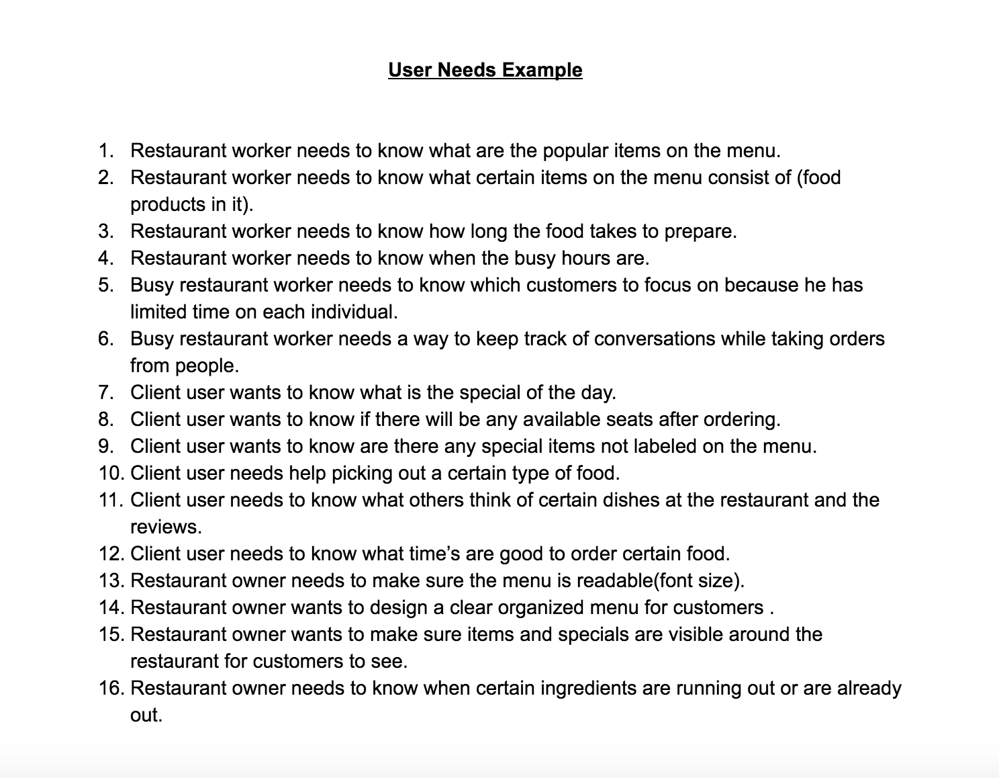
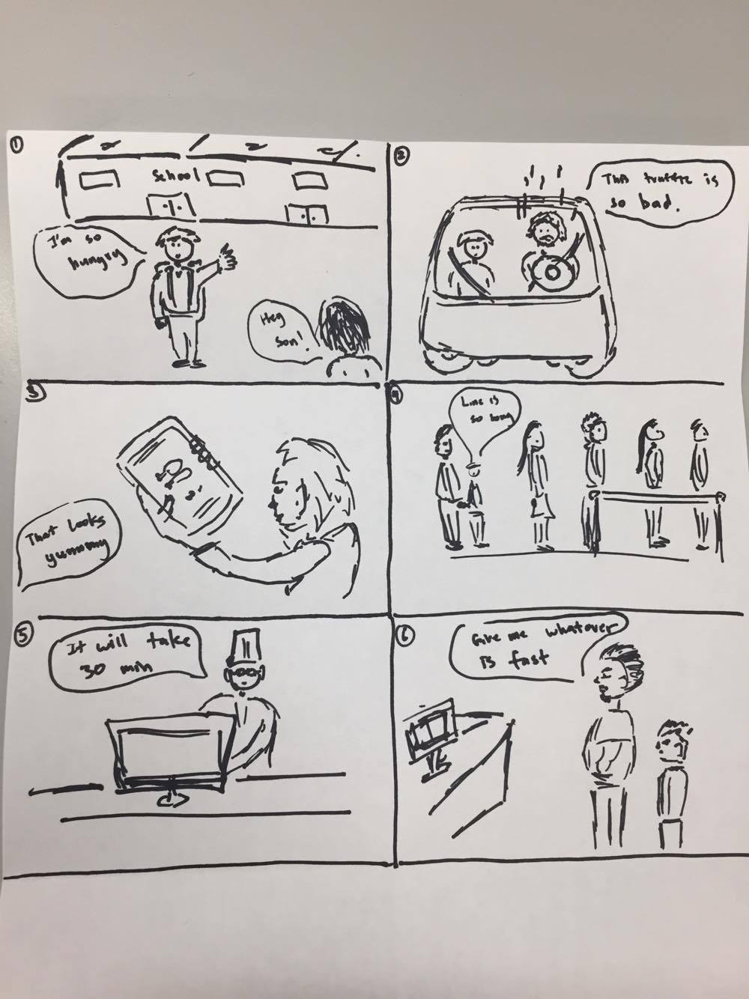
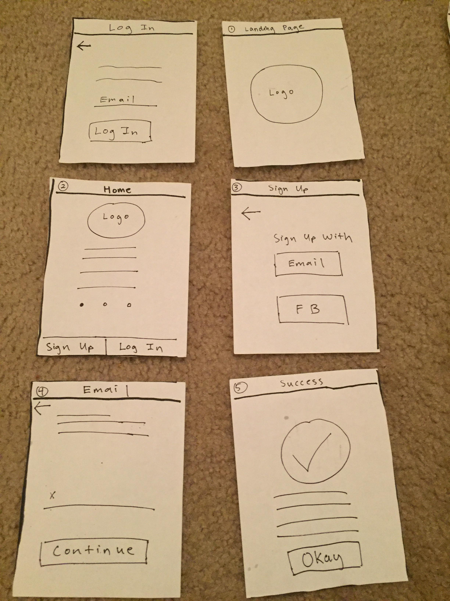
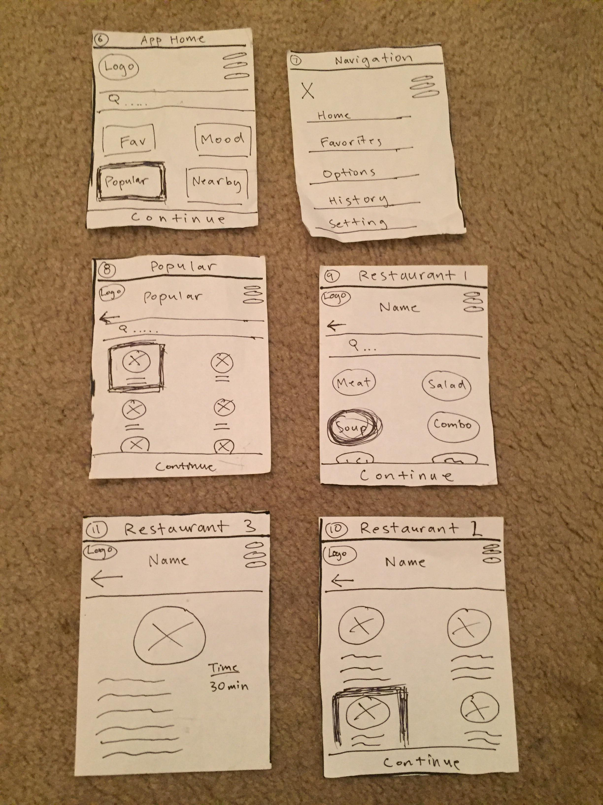
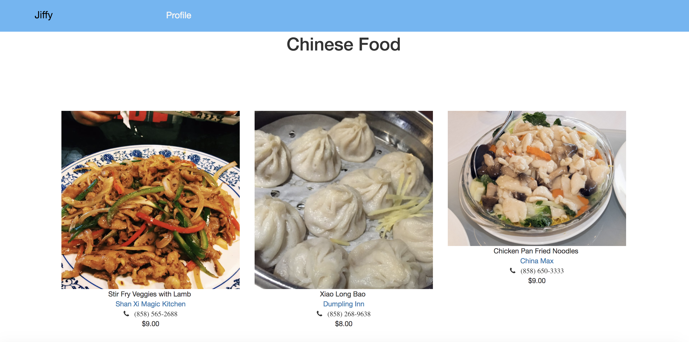
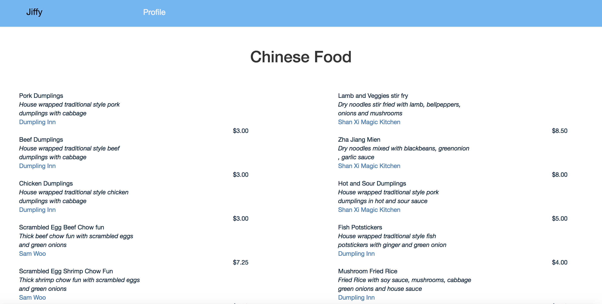
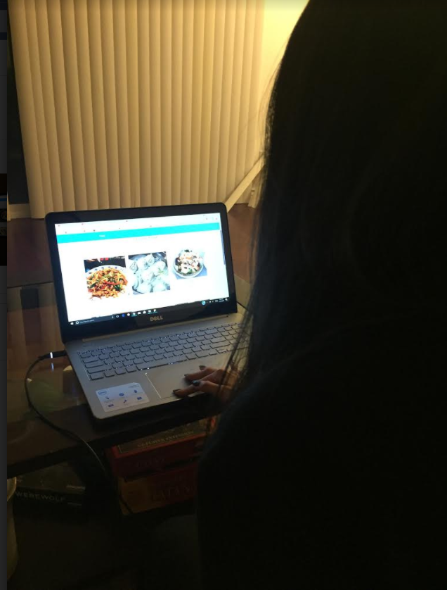
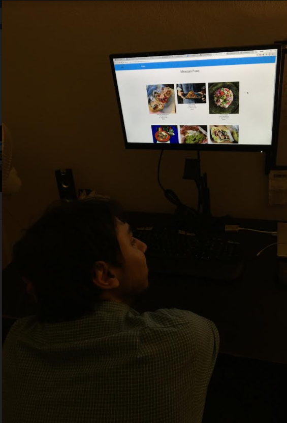

This is my final design project for my COGS120 Interaction Design class. This was quite a difficult project since it was a 3 person team and we lost 1 member in the middle of the course. After ideating we came to decide on a food site that allows user to decide on a food item qucikly. The basic idea is users would go on the site and choose a type of food under a specific prep time so they can get their food in a timely manner.


We decided something as simple as deciding on what food to order because it was something that happens often in our everyday lives. We did our needfinding by observing users in resturants on how they order. I came up with a list of user needs from our findings and created storyboards.


I then made paper prototypes to have users test so we could get more feedback on our app. We would then have other teams run a hueristic evaluation of our prototype so we can create a lofi wireframe with the feedback.


After getting feedback and making the changes to our paper prototype I began to create the site using html and css with a basic bootstrap template. I then used google analytics to run an A/B test on our main food page to see which page our users would click more on.


We then tested the site on 10 other users to see what they thought of it. With the feedback we got, majority of people and from google analytics preferred the page with an image on the menu compared to the traditional menu style version.
This project focused more on the design side and user experience, but the difficult part was having only 1 other teammate and we both didn't really know how to code much either given the amount of time we had. In the end we managed to finish everything on time and got our idea out. Overall this was a great learning experience and designing is really awesome but sometimes you meet circumstances where its hard to create a nice product because of the amount of skills you have and time you can only do so much.